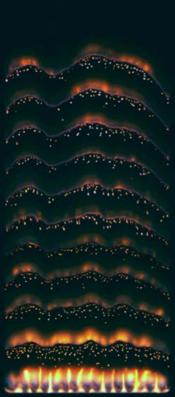
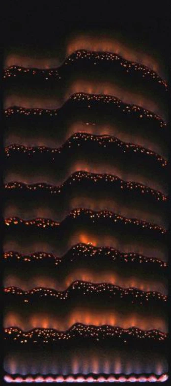

Flight conditions
NASA burned a cotton–fiberglass panel inside the Saffire test duct on Cygnus after the vehicle departed the ISS. The live schematic focuses on the concurrent-flow tests.
NASA mission coverage ↗Watch a flame front spread across a fabric panel inside a ventilated duct on an uncrewed spacecraft.



NASA flight images reproduced from the Saffire results PDF. The consecutive outlines in each montage are 40 seconds apart.
NASA burned a cotton–fiberglass panel inside the Saffire test duct on Cygnus after the vehicle departed the ISS. The live schematic focuses on the concurrent-flow tests.
NASA mission coverage ↗Saffire–I uses approximate points read from NASA’s pyrolysis-position plot. Its detailed results report 420 seconds. Saffire–III uses a constant 2.3 mm/s spread-rate approximation for the reported 320-second run. The horizontal view rotates the experiment for readability.
Original tracking chart ↗Saffire–I’s flame went out at the scheduled airflow cutoff. Moving that event earlier here freezes the reconstructed front and fades the flame. The early cutoff, flame shape and cooling animation are illustrative.
This model covers the test duct. It has no calculation for smoke transport, cabin heating or fire suppression across the spacecraft.
NASA detailed Saffire–I results ↗